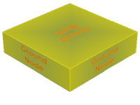
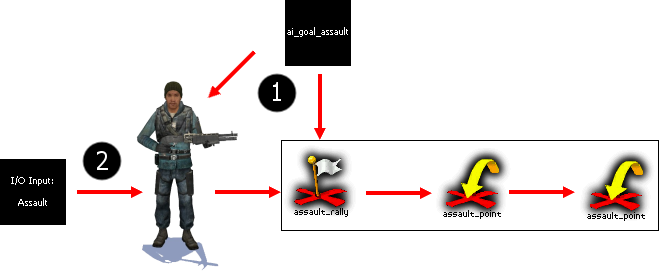
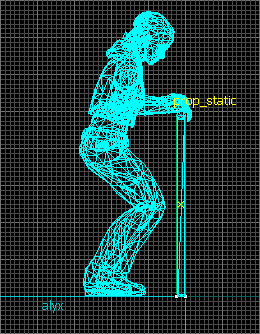

Les NPC (personnages non jouables contrôlés par l'ordinateur) sont indispensables dans toute map solo ; malheureusement, s'il est facile d'en ajouter sur une map, il est plus difficile de leur faire faire ce que l'on veut. À la fin de ce tutoriel (et même avant ^^ ), vous serez capables d'exploiter toutes les possibilités des NPC de Half Life 2.
Le fait de mettre des NPC sur une map n'est pas suffisant pour rendre le tout réaliste et utiliser à sa pleine mesure l'intelligence artificielle des NPC. Donc pour commencer, voyons un peu le minimum syndical à faire au niveau d'une map comportant des NPC.
Dans une map, le joueur peut se déplacer sans problème car il voit tout ce qui se passe autour de lui (en principe :p ), mais les NPC ne voient un mur ou un trou que lorsqu'ils le heurtent ou tombent dedans. Il est donc nécessaire de les informer sur la configuration de la carte ; on utilise pour cela les info_node.
Les info_node de base
info_node

C'est l'entité de base indispensable dans une map solo. Elle permet aux NPC de se repérer dans le niveau. Il faut en placer dans tous les endroits (escalier, rue, etc.) où les NPC pourront aller. La façon dont vous placez vos info_node sur votre map peut tout changer : il ne faut pas qu'ils soient collés les uns aux autres (ça ne sert à rien et ça provoque des bogues), et ils ne doivent pas non plus être trop éloignés, sinon les NPC auront du mal à se déplacer (les citoyens n'arriveront pas à vous suivre).
L'entité se place au niveau du sol (la hauteur n'est pas trop importante, mais évitez de les mettre au plafond ;) ), mais c'est la disposition au sol qui fait que la map peut être très intéressante (les NPC se déplacent sans problème) ou alors complètement ratée (les NPC ne font que venir vers vous en ligne droite, et ne font plus rien dès qu'ils ne vous voient plus).
info_node_hint
Cette entité n'est pas indispensable dans une map solo, mais elle permet d'informer les NPC sur des lieux précis, ce qui rendra les combats plus intenses. Pour cela, placez un info_node_hint sur le sol et éditez ses propriétés (Alt + Entrée ou double-clic gauche). Tout d'abord, regardons la case Hint Group. Si vous voulez que votre NPC utilise cet info_node_hint, vous devez y inscrire un mot (combine, citoyen, banane, carotte, zozor, etc.), et vous devez aussi inscrire ce mot dans la case Hint Group du NPC pour que celui-ci puisse l'utiliser (en règle générale, on crée deux Hint Group, combine et citoyen).
Ensuite, regardons la case Hint qui, comme vous pouvez le voir, peut prendre de nombreuses valeurs. Je vais vous expliquer les principales :
Crouch Cover Medium : cela sert à indiquer qu'à cet endroit, le NPC (combine ou citoyen) peut s'abriter derrière quelque chose d'assez haut (un éboulis, une grosse caisse, une poubelle, etc.) s'il passe à proximité. Il faut en mettre quelques-uns pour que les combines vous résistent un peu plus longtemps et que les citoyens s'abritent des tirs de sniper et de mitrailleuses.
Crouch Cover Low : comme précédemment, cela indique que le NPC peut se mettre à l'abri. Mais cette fois-ci, il s'agenouillera pour s'abriter, on va donc placer cette entité derrière un abri de faible hauteur (un muret, des tonneaux placés par vos soins, etc.).
Enemy Disadvantage Point : le nom vous dit tout, mais bon, je vais quand même vous l'expliquer. ;) En entrant cette valeur, le NPC saura qu'en étant à ce point, sa position lui donnera un avantage sur l'ennemi (latéral, par-dessus). Mais il ne faut pas en abuser, car les NPC ont la fâcheuse habitude de foncer vers cet info_node_hint dès qu'ils peuvent en atteindre un.
Entrance / Exit Pinch : cette clef permet d'empêcher les bouchons sur le périph' que les NPC restent tous coincés dans un passage étroit : ils sauront qu'ils doivent y aller un par un (on en met surtout à l'intérieur des bâtiments, au niveau des portes).
Override jump permission : cette fois-ci, il faut placer deux info_node_hint, un pour le départ et un pour l'arrivée. Cela permet d'informer les NPC sur le fait qu'ils peuvent sauter d'un point en hauteur (pas trop haut, sinon le NPC ne sautera pas ou se blessera). On en trouve un certain nombre dans les chapitres Anti citoyen et Suivez Freeman de Half Life 2.
Les autres info_node
Info_node
Image
Fonction
Info_node_air
Il a la même fonction que l'info_node normal, mais il est utilisé par les NPC volants (scanners, hélico, pigeon).
Info_node_air_hint
Il a la même fonction que l'info_node_hint normal, mais il est beaucoup moins utilisé que son équivalent terrestre.
Info_node_climb
Cet info_node est utilisé par les npc_fast_zombie ; cela leur indique qu'ils peuvent grimper à cet endroit.
Bon, maintenant que vous savez informer les NPC sur l'environnement, il serait bien de les obliger à suivre un chemin prédéfini afin d'animer un peu vos maps ; c'est ce que nous allons voir ici. J'ai appelé cette partie « patrouilles », mais vous pourrez faire faire bien d'autres choses à votre NPC avec ce que je vais vous apprendre.
Pour faire suivre un chemin prédéfini à votre NPC, il faut tout d'abord définir (c'est-à-dire tracer) ce chemin. :D On utilise pour cela les path_corner, qui sont très simples à utiliser, seuls deux champs doivent êtres remplis (pour l'instant) :
Key
Value
Name
Nom de l'entité.
Next Stop Target
Nom de l'entité suivante.
Comme vous pouvez le voir, les path_corner sont reliés entre eux, ce qui permet de vérifier le chemin du NPC (ici, il va tourner en rond). Mais il ne faut pas oublier de mettre quelques info_node pour permettre au NPC de retrouver le path_corner suivant s'il s'écarte du chemin à cause d'obstacles comme le joueur ou autre chose.
Bon, passons maintenant à la configuration de notre NPC (je prends un citoyen pour que ce soit plus facile, mais je vous expliquerai un peu plus tard comment faire avec un ennemi). Dans l'onglet Class Info :
Key
Value
Target Path Corner
Nom du path_corner de destination.
Ça va, ce n'est pas trop dur. :D Maintenant, passons à l'onglet Flags ; vous devez cocher les cases suivantes :
Not Commandable (sinon le NPC vous suivra au lieu de suivre les path_corner) ;
Do Alternate collision for this NPC (évite que le joueur ne bloque le NPC) ;
Ignore player push (idem).
À chaque fois qu'un NPC passe par un path_corner, celui-ci fait office de trigger ; ça nous ouvre des perspectives, et je vais vous en expliquer une : la suppression d'une entité.
Nous sommes dans une ville de votre création, il y a des npc_strider en patrouille. L'ennui, c'est qu'une fois que ce dernier est arrivé au bout du chemin, il peut faire ce qu'il veut ! Pour empêcher cela, on va le supprimer lorsqu'il arrive au dernier path_corner grâce à l'onglet Outputs :
My output name
Targets entities named
Via this input
OnPass
strider_1
Kill
Le npc_strider sera ainsi supprimé de la map. De plus, cela permet de soulager un peu le moteur du jeu (moins d'entités à gérer : quand il y en a des centaines, c'est important).
Contrairement à l'intelligence humaine, l'intelligence artificielle des NPC montre parfois ses limites lors des déplacements. Les NPC peuvent êtres bloqués par des éléments du décor ; pour éviter cela, on utilise la texture npcclip :
Cette texture a la propriété de bloquer les NPC. En la plaçant autour des éléments qui seraient amenés à empêcher les NPC d'avancer, vous éviterez que ces derniers ne se bloquent.
Vous voulez un exemple ? Bon, je suis gentil, en voici un : dans ce couloir (créé à l'arrache rien que pour vous :-° ), ce grillage tordu peut bloquer les NPC :
On va donc créer un bloc avec la texture npcclip qui recouvre le grillage de façon à empêcher les NPC de l'approcher de trop près :
C'est avec ce petit truc que l'on arrive à faire des maps avec des NPC qui ne sont pas bloqués toutes les trente secondes par un élément du décor.
Maintenant que vous savez déplacer les NPC selon vos désirs et qu'ils savent, eux, se déplacer de manière autonome, on va pouvoir passer aux choses sérieuses : les faire combattre ! :D
Ah, enfin le combat ! Comme Half Life 2 est un FPS, c'est normal qu'il y ait des combats. Le fait de placer des NPC hostiles sur vos maps est suffisant pour les faire combattre, mais on peut faire encore mieux. :D
Je vais vous apprendre ici à faire en sorte qu'un NPC ennemi, le npc_metropolice, monte la garde devant une porte et vous repousse si vous vous approchez de trop près.
Quoi ?! Tu veux nous apprendre à transformer un NPC en chien de garde ? Mais... On n'est pas dans la partie sur le combat ?
Si, mais c'est le calme avant la tempête. :D
Pour réaliser cela, il nous faut :
un npc_metropolice : c'est le NPC qui montera la garde ;
un ai_goal_police : pour indiquer au NPC la zone à garder ;
un trigger_once : pour déclencher tout cela.
Maintenant, imaginez que vous avez un passage à faire garder par un NPC :
Il faut placer l'ai_goal_police juste devant la porte et le npc_metropolice pas trop loin :
Configuration
Commençons par le npc_metropolice : il suffit juste de lui donner un nom grâce au champ Name (par exemple cop1) et de lui donner comme arme la matraque électrique grâce au champ Weapons : Stun Stick.
C'est en fait l'entité ai_goal_police qui est importante : elle marque la zone à garder.
Champ
Valeur
Name
poste1
Pitch Yaw Roll
Il faut orienter l'entité, car c'est elle qui oriente le NPC.
Radius
Le rayon de la zone à garder (ici 32).
Target
!player
Il ne reste plus qu'à déclencher tout cela à l'aide d'un trigger_once. Allez dans l'onglet Outputs et entrez ces deux lignes de commandes (je vais vous expliquer à quoi elles servent juste après ;) ).
My output named
Targets entities named
Via this input
With a parameter override of
On Trigger
cop1
SetPoliceGoal
poste1
On Trigger
poste1
DisableKnockOut
<none>
Et comme je suis très gentil (et surtout parce qu'on est sur le Site du Zéro :p ), je vous montre ce que vous devez obtenir au final :
Explications
La première ligne d'instructions va faire en sorte que lorsque vous déclenchez le trigger_once, le npc_metropolice tienne compte de l'ai_goal_police ; il va donc se diriger vers celui-ci pour monter la garde.
La deuxième ligne d'instructions désactive le KO du npc_metropolice : il vous frappera, mais vous ne serez pas KO tout de suite.
Pour faire en sorte que les autres NPC hostiles vous laissent tranquilles, il faut utiliser une autre entité : l'ai_relationship.
On y arrive enfin ! Je vais vous apprendre maintenant à faire en sorte que des NPC qui sont amis par défaut deviennent des ennemis et inversement. Pour cela, une seule entité suffit : ai_relationship.
Voyons comment l'utiliser en fonction de ce que l'on veut faire :
On va faire en sorte qu'un npc_citoyen et un npc_combine_s soient amis (par défaut, ils sont ennemis). On les appellera citoyen1 et combi1 pour faire simple.
Dans l'onglet Class Info, voyons ce qui nous intéresse : il y a les champs Subjects, Targets et Disposition.
Les champs Subjects et Targets sont utilisés pour entrer le nom des NPC ciblés par le champ Disposition. Pour ce champ, on a quatre choix.
Hate : le NPC subject détestera le NPC target et voudra le tuer.
Fear : le NPC subject aura peur du NPC target et voudra fuir.
Like : le NPC subject sera ami avec le NPC target (et lui obéira si c'est le joueur).
Neutral : le NPC subject et le NPC target s'ignoreront.
Ensuite, le champ Reciprocal permet de faire en sorte que cette relation soit réciproque.
Pour finir, revenons sur notre exemple : c'est très simple à faire, il suffit d'un seul ai_relationship pour que ces deux joyeux drilles soient amis. On utilisera la DispositionLike et on mettra Reciprocal sur Yes.
Champ
Valeur
Subject(s)
citoyen1
Target(s)
combi1
Disposition
Like
Start Active
Yes
Reciprocal
Yes
Voilà ! Il existe une infinité de combinaisons avec cette entité, on peut même réaliser un mod grâce à elle (Combine Destiny, pour ceux qui ne le connaissent pas).
On va maintenant passer à la partie qui vous intéresse tous : comment faire pour que les NPC chargent ?
En fait, il suffit juste de créer une ligne d'assaut et le tour est joué ! ;) Pour cela, il nous faut :
un npc_combine_soldier : je ne vous explique pas pourquoi, vous êtes grands :p ;
un ai_goal_assault : il sert à configurer l'assaut ;
un assault_rallypoint : c'est le point de départ de l'assaut ;
plusieurs assault_assaultpoint : ils sont utilisés pour baliser le chemin ;
un trigger_once : pour déclencher l'assaut.
Si vous êtes déjà allés sur le Wiki de Valve, vous avez sûrement vu ce schéma incompréhensible à première vue o_O :

Il résume de manière succincte ce qui va se passer : un trigger déclenche un ai_goal_assault, qui va envoyer un message à un NPC précis et va lui demander de se diriger vers l'assault_rallypoint de départ. Ce dernier pointe vers un assault_assaultpoint vers lequel va se diriger le NPC, et ainsi de suite (rassurez-vous, je vais tout vous expliquer en détail ;) ).
Configuration
Commençons par tracer le chemin pour l'assaut : le point de départ est un assault_rallypoint, il faut lui donner un nom et lui donner le nom de l'assault_assaultpoint suivant.
Champ
Valeur
Name
depart
Assault Point
as1
Ensuite, pour chaque assault_assaultpoint, il faut leur donner un nom et leur donner le nom du prochain assault_assaultpoint. Mais en fait, c'est un peu plus compliqué, car lorsque le NPC arrive à un assault_assaultpoint, il a deux choix :
soit le point est clear et il continue jusqu'au point suivant ;
soit le point n'est pas clear et il s'y arrête jusqu'à ce qu'il soit clear.
Donc nous, ici, on veut que le NPC charge sans jamais s'arrêter : il suffit que tous les assault_assaultpoint soient clear dès qu'il y arrive. Pour cela, on coche le Flag : Clear this point upon arrival.
Notre chemin d'assaut est tracé, passons au déclenchement de cet assaut. Pour le NPC, c'est simple, il faut juste lui donner un nom (exemple : go1), mais pour l'ai_goal_assault, c'est une question de logique. :)
Champ
Valeur
Fonction
Name
tri_depart
Il faut lui donner un nom pour pouvoir le déclencher par un trigger.
Actor(s) to affect
go1
C'est le nom du NPC qui doit charger.
Rally point Set
depart
C'est le nom de l'assault_rallypoint vers lequel le NPC doit se diriger.
Start Active
No
Pour éviter que le NPC ne charge au lancement de la map.
Ensuite, il ne reste plus qu'à déclencher le tout par un trigger :
My output named
Targets entities named
Via this input
On Trigger
tri_depart
Activate
Et voilà, c'est fini ! :D Pour rendre vos assauts plus crédibles, il est préférable de faire plusieurs lignes d'assaut parallèles : cela donnera l'impression que vos NPC chargent par vagues.
Voilà ! Maintenant, les combats sont plus intenses et plus longs grâce à des NPC bien configurés. Dans le chapitre suivant, je vais vous montrer comment rendre les maps plus vivantes grâce à l'animation des NPC et en les faisant parler. :-°
Si un NPC est capable de bouger tout seul pour se déplacer dans le jeu, on peut aussi le configurer pour qu'il exécute certains mouvements (que l'on aura judicieusement choisis), ce qui rendra le jeu plus immersif.
Si avoir l'image (les mouvements du NPC) c'est déjà bien, avoir du son (les paroles) c'est encore mieux ! :p Vous allez voir qu'on peut aussi faire parler les NPC avec un certain réalisme. :-°
Voyons tout d'abord comment faire pour que notre NPC exécute une animation précise à un moment précis. Pour cela, on utilise l'entité scripted_sequence, qui n'est pas facile à utiliser convenablement, mais je vais tenter de vous l'expliquer du mieux que je peux ; car une fois qu'on la maîtrise, on est capable de réaliser des séquences aussi bien que celles du jeu original.
Pour commencer
Avant toute chose, il faut connaître les séquences que notre NPC est capable d'exécuter. Pour cela, c'est très simple, il suffit de sélectionner un NPC, d'éditer ses propriétés et de regarder dans l'onglet Model. On y trouve une liste de toutes les actions que le NPC est capable d'exécuter.
C'est aussi très pratique, car certaines séquences (comme Alyx sautant par-dessus une rambarde, Mossman appuyant sur un bouton) doivent êtres placées à l'unité près pour éviter des aberrations.
Pour mon tutoriel, je vais prendre le npc_alyx et lui donner comme nom alyx (ce n'est pas original, mais c'est simple ;) ).
Explications
Pour le NPC, c'est très simple, il suffit juste de lui donner un nom. Comme ici j'utilise Alyx, je mets le champ Weapons sur Nothing pour éviter quelques problèmes.
Regardons maintenant en détail l'entité scripted_sequence :
L'onglet Class Info
Name : la séquence d'animation doit être déclenchée par un trigger, il faut donc donner un nom à notre scripted_sequence pour pouvoir la déclencher.
Pitch Yaw Roll : cela sert à orienter l'animation à 360 °.
Target NPC : on entre dans ce champ le nom du NPC qui doit exécuter la séquence (ici, ce sera alyx).
Pre Action Idle Animation : attention, cela devient plus difficile. On entre dans ce champ le nom de l'action que le NPC doit exécuter avant que la scripted_sequence ne soit déclenchée par un trigger. Cette animation est répétée en boucle jusqu'au déclenchement de la scripted_sequence ; souvent, c'est une animation où le NPC est immobile, assis, ou toute autre animation qui peut se répéter en boucle.
Entry Animation : nous y voilà, la scripted_sequence a été déclenchée par un trigger. Avant d'effectuer l'animation principale, le NPC peut exécuter une courte animation pour faire la transition entre l'animation précédente et l'animation principale.
Action Animation : comme vous l'avez deviné, on entre ici le nom de l'action principale que va exécuter notre NPC.
Post Action Idle Animation : une fois que notre NPC a fini d'exécuter l'animation principale, il peut en exécuter une autre à la suite de celle-ci, toujours pour faire la transition avec une autre animation.
Custom Move Animation : on y inscrit le nom d'une animation qui permet au NPC de se rendre à la scripted_sequence d'une manière spéciale (en marchant à reculons, accroupi, etc.). Je vais vous l'expliquer plus en détail par la suite.
Loop Action Animation ? : on l'utilise pour faire en sorte que l'animation principale soit répétée en boucle jusqu'à l'interruption de cette dernière par un trigger (ne vous inquiétez pas, je vais y revenir plus en détail après ;) ).
Move to Position : Hammer nous propose là plusieurs choix ; c'est la façon dont l'entité va se déplacer pour aller exécuter son animation.
No : le NPC va exécuter l'animation à l'endroit où il se trouve. Mais attention, la scripted_sequence ne doit pas se trouver trop loin, sinon ça risque de boguer.
Walk : le NPC va tout simplement marcher jusqu'à la scripted_sequence, puis y exécuter l'animation.
Run : pareil, simplement cette fois-ci il va courir.
Custom movement : il va utiliser une autre façon pour se déplacer (j'y reviendrai plus en détail après).
Instantaneous : au chargement de la map, il va être téléporté à la scripted_sequence, c'est pour cela que lorsque le niveau se charge, le joueur doit en voir le moins possible.
No - Turn to Face : le NPC va exécuter son animation là où il est, mais en regardant en direction du joueur.
Next Script : on y entre (optionnel) le nom de la prochaine scripted_sequence à exécuter.
Vous n'êtes pas obligés de remplir tous les champs, seuls certains sont importants, d'autres sont utilisés de manière exceptionnelle.
L'onglet Flags
Repeatable : cela permettra à un autre NPC d'exécuter cette scripted_sequence.
Start on Spawn : au chargement de la map, le NPC va se rendre à la scripted_sequence (utilisez le champ Move to Position pour choisir la manière dont il va s'y rendre) et exécuter une seule fois l'animation que vous avez inscrite dans le champ Pre Action Idle Animation.
No Interruptions : le NPC exécutera son animation et rien ne pourra le déranger pendant qu'il l'exécute, même s'il se fait tirer dessus.
Override AI : permet de désactiver l'intelligence artificielle des NPC lors de l'animation ; on s'en sert lorsque le NPC refuse d'exécuter une animation pour une raison quelconque (risque d'être tué, bloc qui le gène, etc.).
No script Movement : le NPC n'aura pas de mouvement à exécuter avec cette scripted_sequence, il se déplacera juste vers cette entité.
Loop in Post : en cochant cette option, le NPC répétera en boucle l'animation que vous avez inscrite dans le champ Pre Action Idle Animation, jusqu'à ce que la scripted_sequence soit déclenchée par un trigger.
Priority Script : le NPC finira d'exécuter l'animation même si un autre événement (script, condition, trigger) lui demande de faire autre chose.
Les Flags doivent êtres utilisés en complément. Par exemple, si vous voulez qu'un NPC soit assis puis qu'il exécute une autre animation au moment où vous déclenchez un trigger, il faut mettre dans le champ Pre Action Idle Animation et cocher les FlagsStart on Spawn et Loop in Post Idle. Avec cela, il sera assis en continu jusqu'à ce que la scripted_sequence soit déclenchée.
Exercice
C'est ce que j'appelle un exercice guidé : je vous dis comment faire étape par étape pour voir si vous avez bien compris.
Alyx est sur un bloc de 64 de hauteur (vous allez comprendre pourquoi), et elle vous aperçoit ; elle va alors vers une rambarde au bord de ce bloc, saute par-dessus et, une fois arrivée en bas, nous fait une jolie pirouette. :p
Pourquoi le bloc sur lequel se trouve Alyx doit-il avoir une hauteur de 64 ?
Tout simplement parce que lorsqu'un NPC exécute une scripted_sequence, il ne tient pas compte de l'environnement autour de lui (il traverse le plancher, les autres NPC, etc.), et l'animation que vous allez utiliser (jumpdownsm) est configurée de telle sorte qu'Alyx saute et retombe 64 unités plus bas.
J'ai trouvé l'animation jumpdownsm, mais comment je fais pour savoir où placer exactement ma scripted_sequence ?
C'est simple, prends ton NPC. Lorsque tu es dans l'onglet Model, le NPC exécute en boucle l'animation que tu as choisie, cela te permet de placer à l'unité près le NPC pour qu'il soit en phase avec l'environnement. Voilà ce que ça donne avec Alyx qui saute par-dessus la balustrade :

Maintenant que l'on sait où doit se placer le NPC pour exécuter son animation, il suffit de placer la scripted_sequence de façon à ce qu'elle soit centrée sur le NPC et collée sur le sol. Si je mets le mot « collée » en rouge et en gros, c'est important : si la scripted_sequence n'est pas sur le sol, le NPC va bien exécuter son animation, mais il aura l'impression de flotter en l'air. Voici ce que ça donne avec Alyx :
Vue de dessus : la scripted_sequence et Alyx sont alignées.
Vue latérale : la scripted_sequence est collée au sol.
Maintenant, configurons la scripted_sequence :
Champ
Valeur
Explications
Name
sautalyx
On lui donne un nom afin de pouvoir la déclencher par un trigger.
Target NPC
alyx
On a donné au npc_alyx le nom d'alyx.
Action Animation
jumpdownsm
C'est le nom de l'animation que le npc_alyx va exécuter.
Post Action Idle Animation
FlipLeft
C'est le nom de l'animation que va exécuter le NPC après l'action principale (ici une roulade vers la gauche).
Move to Position
Walk
Le NPC va marcher pour se rendre à la scripted_sequence afin d'exécuter l'animation.
Il ne reste plus qu'à configurer un trigger_once, et le tour est joué :
My output named
Targets entities named
Via this input
ON Trigger
sautalyx
Begin Sequence
Et voilà, maintenant, vous savez utiliser les scripted_sequence comme il faut ! Mais on peut en faire plus...
Pour en faire plus
Vous avez essayé des combinaisons d'animations et vous commencez à arriver à faire quelque chose de potable, mais comme vous l'avez sûrement remarqué, votre NPC est capable de faire un grand nombre d'autres animations.
Tout d'abord, vous voyez que pour certaines animations de votre NPC, c'est tout cassé. :( C'est normal, car ces animations-là sont utilisées en complément des animations principales (les doigts, les lèvres et d'autres membres qui bougent), il ne faut donc pas les utiliser.
On peut aussi faire en sorte que votre NPC se rende à la scripted_sequence d'une façon non conventionnelle. Pour cela, il faut mettre dans le champ Custom Move Animation le nom d'une animation qui permet au NPC de se déplacer d'une certaine manière (Crouch_walk_all : accroupi ; run_protected_all : court en se protégeant la tête).
Mais le meilleur, c'est qu'on peut aussi faire parler les NPC ! On va voir ça tout de suite.
Si vous êtes encore vivants après cette longue et difficile partie sur les scripted_sequence, vous allez pouvoir vous reposer avec l'entité logic_choreographed_scene. :D
Sa configuration est à la fois très simple et très compliquée :
Name : comme toujours, on lui donne un nom pour pouvoir l'activer par un trigger ;
Scene File : on y entre le nom de la scène que l'on veut faire jouer à notre NPC ;
Target 1 : on y entre le nom du NPC qui doit jouer la scène ;
Target 2 : on y entre le nom d'un deuxième NPC qui participe à la scène.
Si je dis que la configuration est très compliquée, c'est parce que pour avoir un aperçu des paroles contenues dans un fichier VCD, il n'y a pas trente-six solutions : il faut utiliser le logiciel Face Poser qui se trouve dans le SDK. S'il n'y a pas besoin de le configurer (Steam le fait automatiquement ;) ), il est un peu plus dur à utiliser.
Je ne vais pas vous faire un tutoriel sur son utilisation (enfin pas tout de suite ;) ), mais juste vous apprendre à l'utiliser pour choisir les paroles qu'il vous faut.
Tout d'abord, dans le SDK de Steam, cliquez sur Face Poser :
Il s'ouvre, et vous voyez une mosaïque de fenêtres ; ne vous sauvez pas :D , ce n'est pas si compliqué que ça. ;)
En fait, les fichiers VCD sont composés :
des paroles du NPC ;
de l'animation du visage du NPC ;
de l'animation du corps du NPC.
Euh, j'ai pas tout compris, là ! o_O
C'est normal. :D En fait, la grande force de Half Life 2, c'est la synchronisation des lèvres du NPC avec les paroles. :-° Bon, on va faire un essai pour vous montrer comment fonctionne le logiciel.
Tout d'abord, il nous faut un modèle ; on va prendre Barney. Pour cela, il faut faire File puis Load Model, et cliquer sur Barney.jpg pour charger le modèle. Ensuite, il nous faut charger une scène ; pour cela, allez dans Choregraphy puis Load, et choisissez la scène sdk_barney1. Pour finir, cliquez sur le bouton de lecture : vous voyez et entendez Barney parler d'une histoire de bière ! (Hommage à Half Life 1...)
Voilà comment utiliser le logiciel à votre niveau. Il est assez simple pour cette action, mais vous devez déjà vous poser la question :
Je n'ai le choix qu'entre six chorégraphies, mais où sont les autres ?
Elles sont dans le fichier half-life 2 content.gcf. Il va nous falloir les extraire de ce fichier pour pouvoir les utiliser avec le logiciel Face Poser, et pour cela il faut télécharger le logiciel GCFScape. Télécharger le logiciel GCFScape
Une fois le logiciel installé, faites Files puis Open, et allez dans le répertoire où se trouve le fichier half-life 2 content.gcf, qui est par défaut :
C:\Program Files\Valve\Steam\SteamApps
Ensuite (après l'avoir ouvert), faites un clic droit sur le dossier scenes puis Extract, et choisissez un répertoire de destination. Vous pouvez maintenant choisir n'importe quelle scène et la faire jouer par le logiciel Face Poser. ;)
Allez, vous n'avez plus qu'à vous exercer, maintenant, car c'est en forgeant que l'on devient forgeron. Et pour cela, il n'y a rien de mieux qu'un petit TP ! :D
On va maintenant mettre tout ce que vous avez appris jusqu'ici en application. Pour cela, on va réaliser un débarquement de soldats combine depuis un aéronef, en l'occurrence un npc_combinedropship. Cette entité est capable de suivre un chemin jusqu'à une zone où elle y dépose des soldats (six maximum), puis repart.
Je vais tout d'abord vous expliquer le scénario, car dans tous les bons jeux, il y a un scénario. Puis je vais vous apprendre quelques petites choses à savoir pour réaliser ce TP, surtout sur le npc_combinedropship qui n'est pas un NPC comme les autres.
Enfin, on passera à la réalisation du TP où je vous expliquerai pas à pas ce qu'il faut faire. Libre à vous (c'est même conseillé) de l'améliorer par la suite.
Commençons par le début, ce que vous allez réaliser.
L'histoire est très simple : vous êtes dans une petite maison avec une arme, vous sortez de la maison et à ce moment-là, vous apercevez un transport de troupe du cartel qui se dirige vers vous en vous canardant. Vous vous abritez dans la maison, et c'est là que vous vous apercevez que l'engin s'est posé et est en train de débarquer ses soldats. Ils se mettent alors en position pour donner l'assaut à la maison dans laquelle vous vous trouvez. Ce n'est pas un scénario terrible, mais ça va vous faire travailler un petit moment pour réaliser ce combat qui, mine de rien, peut durer plusieurs minutes (voire plus).
En premier lieu, il nous faut une maison ; et comme je suis très gentil, je vais même vous en fournir une, comme ça vous n'aurez plus aucune excuse pour réaliser ce TP.
À partir de maintenant, je pars du principe que vous avez téléchargé la map. Comme vous pouvez le voir, elle est très basique (une maison sans meubles avec juste une porte et un trou à l'arrière de la maison, je vous laisse deviner pourquoi :D ), mais elle sera parfaite pour le TP.
Avec ce que vous avez appris dans les chapitres précédents, vous êtes capables de réaliser un assaut, mais pas de configurer un débarquement puis un assaut coordonné... On va tout de suite y remédier.
Avant de réaliser le TP, il y a quelques petites choses qu'il faut que vous sachiez.
Configuration du débarquement
Pour réaliser cela, il nous faut :
1 npc_combinedropship : c'est le vaisseau d'où débarqueront les soldats ;
4 npc_combine_s : ce sont les soldats qui vont sortir du vaisseau ;
5 info_target : on va en utiliser un pour indiquer où doit se poser le vaisseau, et les autres pour indiquer aux soldats où ils doivent se rendre lorsqu'ils sortent du vaisseau ;
4 path_corner : le npc_combinedropship est incapable de se déplacer de manière autonome, il se contente de suivre un chemin et de suivre un script. On va en utiliser deux pour l'amener sur les lieux et deux autres pour le faire repartir.
Configuration des soldats
Leur configuration est assez simple, il suffit juste de leur donner un nom (exemple : soldat1, soldat2, etc.) et de les armer :D ; mais il faut aussi, dans l'onglet Flags, cocher la case Template NPC (used by npc_maker, will not spawn), sinon le npc_combinedropship ne pourra pas débarquer ses troupes... Vous allez comprendre juste après, lors de sa configuration.
Configuration du npc_combinedropship
Comme je l'ai dit précédemment, le npc_combinedropship (que l'on va nommer dropship) suit les path_corner et exécute des scripts. On va donc lui tracer un chemin pour qu'il puisse se rendre sur le lieu où il doit débarquer les soldats, puis un autre pour qu'il puisse repartir une fois sa mission accomplie.
Pour le chemin de départ, on place deux path_corner, un au fond de la map (qu'on appellera path1) et un autre au-dessus de la zone de débarquement, à une hauteur de 256 unités environ. On l'appellera path2. Pour le chemin du retour, on en place un pas trop loin de la zone de débarquement (on l'appellera path3), et le dernier vers le fond de la map, avec pour nom path4. Ensuite, on relie entre eux path1 et path2, et on fait pareil avec path3 et path4. Mais surtout, ne reliez pas entre eux path2 et path3, sinon vous verrez le vaisseau suivre le parcours sans déposer sa cargaison. :( Je n'explique pas comment les relier entre eux, car vous avez appris cela lors du cours sur les patrouilles (je vous invite à aller le relire si vous ne savez plus comment faire).
o_O Soit je n'ai rien compris aux patrouilles, soit tu t'es trompé... Ce ne serait pas plutôt path1 ?
Eh bien non, car en fait, dans une vrai map, le vaisseau surgit souvent de derrière une colline ou un immeuble et va suivre le chemin décrit par les path_track, jusqu'au path_track indiqué. Car en fait, il va remonter le chemin des path_track jusqu'à ce qu'il tombe sur celui qui contient les instructions suivantes :
Dans l'onglet Outputs :
My output named
Targets entities named
Via this input
With a parameter override of
OnPass
dropship
FlyToSpecificTrackViaPath
path2
Ces instructions demandent au npc_combinedropship de voler jusqu'au path_track indiqué en suivant le chemin tracé par les autres path_track. De plus, il sait qu'en arrivant au path_track indiqué, il aura autre chose à faire ; ça lui permet d'anticiper, et donc d'enchaîner les actions sans problème.
Une fois qu'il arrive au path2, il va déclencher un script qui l'oblige à se poser et à débarquer ses troupes. Pour cela, dans l'onglet Outputs :
My output named
Targets entities named
Via this input
With a parameter override of
OnPass
dropship
LandTakeCrate
4
Il va donc se poser et débarquer ses soldats (ici il en débarque quatre, mais il peut en débarquer jusqu'à six) ; mais il faut aussi lui indiquer où il doit les déposer. Pour cela, on utilise un info_target que l'on nommera zonedeb et que l'on placera au sol, pas trop loin du path2.
Ensuite, chaque soldat qui débarque doit savoir où il doit se rendre. Pour cela, on va placer les quatre autres info_target pas trop loin du premier et leur donner à chacun un nom différent (exemple : terre1, terre2, etc.). Ils resteront chacun à cet endroit, jusqu'à ce qu'un script leur demande de faire autre chose.
Passons maintenant au npc_combinedropship. Il va y avoir un certain nombre de champs à remplir :
Champ
Valeur
Explication
Name
dropship
Ce n'est plus la peine que j'explique pourquoi il faut lui donner un nom.
Target path_track
path2
Nom du path_track vers lequel il doit se diriger au final.
Land target name
zonedeb
Nom de l'info_target qui indique la zone d'atterrissage (attention à l'orientation).
Name of template NPC 1
soldat1
Nom du premier soldat qui va sortir du vaisseau (faites pareil pour les autres NPC).
Name of dustoff point for NPC 1
terre1
Nom de l'info_target vers lequel le NPC va se diriger à sa sortie du vaisseau.
Crate Type
Soldier Crate
Container de transport de troupe pour le npc_combinedropship.
Une fois qu'il a fini de débarquer ses troupes, le npc_combinedropship doit exécuter un script qui l'oblige à repartir en suivant un autre chemin (au bout duquel le NPC est souvent supprimé pour soulager le moteur du jeu). Pour cela, on va faire comme à l'allez ; donc dans l'onglet Outputs du npc_combinedropship :
My output named
Targets entities named
Via this input
With a parameter override of
OnFinishedDropoff
dropship
OnFinishedDropoff
path4
Cela indique qu'une fois le débarquement fini, le npc_combinedropship doit se diriger vers le path_corner numéro 4 en suivant le chemin tracé par les autres path_corner.
Configuration du logic_relay
Le problème, c'est qu'une fois les npc_combine_s débarqués, ils restent là où ils sont, ce qui n'est pas très bien... On va donc faire en sorte qu'à la fin du débarquement, un assaut se déclenche ; et pour cela, on va utiliser un logic_relay. En fait, un logic_relay, c'est juste un relais, on le déclenche par un output et il va à son tour déclencher une série de scripts. Il est juste là pour nous permettre de mieux nous organiser lorsque l'on mappe. Vous n'êtes pas obligés de faire comme moi et de l'utiliser, mais c'est beaucoup plus pratique et ça permet de mieux s'organiser sur la map.
Tout d'abord, il faut le déclencher, ce logic_relay (on va aussi lui donner un nom, par exemple relais1), et comme il doit être déclenché à la fin du débarquement, on va tout simplement le déclencher comme l'instruction précédente :
My output named
Targets entities named
Via this input
With a parameter override of
OnFinishedDropoff
relais1
Trigger
<none>
Mais maintenant, qu'est-ce qu'on fait ? Il va déclencher quoi, ton logic_relay ?
Il va déclencher le début de l'assaut. Si vous n'êtes pas au point sur les assauts, je vous conseille d'aller relire le tutoriel qui en parle. Le logic_relay va activer les ai_goal_assault pour que chaque NPC se rende à son assault_rallypoint, puis il va attendre que les autres NPC soient aussi en place afin de tous les charger en même temps.
Mais pour déclencher un assaut à un autre moment qu'au chargement de la map, il faut que l'ai_goal_assault qui gère cet assaut soit désactivé au démarrage (pour cela, on met dans le champ Start Active la valeur No).
Configuration du math_counter
Certains vont faire « beeeeh » et je les comprends (en leur répondant qu'« il n'y a pas de mais » :p ). En effet, cette entité a comme représentation des moutons qui sautent par-dessus une barrière, car c'est son rôle de compter les moutons : à chaque action dans le jeu (mort d'un NPC, porte ouverte, etc.), un output contenant une valeur (1, 2, 3, 37...) peut être envoyé au math_counter. Et une fois arrivé au résultat voulu, celui-ci déclenche un autre output. Ici, on veut faire un assaut coordonné, c'est-à-dire qui se déclenche au moment où tous les NPC sont en position ; et pour moi, un NPC est en position lorsqu'il se place sur son assault_rallypoint. À ce moment-là, un output va être déclenché et ajouter +1 au math_counter, et lorsque celui-ci aura atteint le nombre voulu, il déclenchera l'assaut. :-° (Ici j'appelle le math_counter : gogogo).
Un NPC arrive sur un assault_rallypoint, cela va ajouter +1 au math_counter :
Il y a ici quatre assault_rallypoint qui vont chacun ajouter +1 au math_counter, donc lorsque celui-ci arrive à 4, il doit déclencher l'assaut :
Et c'est parti : les quatre NPC vont s'élancer tous en même temps. C'est à vous de jouer, maintenant !
Maintenant que je vous ai tout expliqué, vous pouvez vous lancer et essayer de réaliser ce TP. Vous n'êtes absolument pas obligés de faire comme moi, ce n'est qu'une méthode ; et c'est pareil pour la map que je vous ai proposée au début, vous pouvez en utiliser une de votre création. ;) Mais pour ceux qui bloqueraient quelque part, je leur propose une correction de la map du début :
Elle reprend exactement ce que je vous ai dit juste avant. Il ne tient qu'à vous de l'améliorer...
Si vous tuez un npc_combine_s avant qu'ils soient tous en place, l'assaut ne se déclenchera pas (le math_counter n'arrivera pas à 4). Il suffit de faire en sorte qu'à la mort d'un NPC, cela ajoute +1 au math_counter.
Rajouter deux autres npc_combine_s.
Faire en sorte qu'après le premier débarquement, un deuxième lui succède.
Rajouter des npc_citizen.
Si vous avez des problèmes avec la réalisation de ce TP, n'hésitez pas à m'envoyer un MP, ou exposez votre problème sur le forum où d'autres zMappeurs pourront vous aider ! :D
Et voilà, la première partie de ce big tutoriel sur les NPC est finie. Je vous ai appris les bases pour pouvoir insérer quelques NPC dans vos maps et pour pouvoir comprendre les tutoriels de la deuxième partie, où vous allez approfondir vos connaissances. ;)
Beaucoup d'entre vous doivent se poser la question :
Mais c'est quoi au juste, un NPC template ?
Si l'on devait donner une définition pour les NPC templates, ce serait la suivante : « Un NPC template est un NPC qui ne sera chargé dans le niveau que si une instruction (via un output) en donne l'ordre. » En clair, le NPC template n'est pas chargé lors du chargement du niveau, mais lors de la partie, au moment et à l'endroit voulus.
Créer un NPC template
Alors là, c'est tout simple : il suffit juste d'éditer les propriétés de n'importe quel NPC, d'aller dans l'onglet Flags et de cocher la case Template NPC. Et voilà, vous avez un NPC template ! ;)
Par exemple : souvenez-vous, lorsque vous êtes dans Cité 17, les citoyens se sont révoltés et vous épaulent (en théorie) durant votre périple jusqu'à la Citadelle. Le système a été conçu pour que vous ne puissiez avoir que quatre citoyens sous vos ordres en même temps. Eh bien tous ces citoyens sont des NPC templates, ils n'apparaissent dans le jeu que si on leur demande d'apparaître.
{kind=link}
{kind=link}